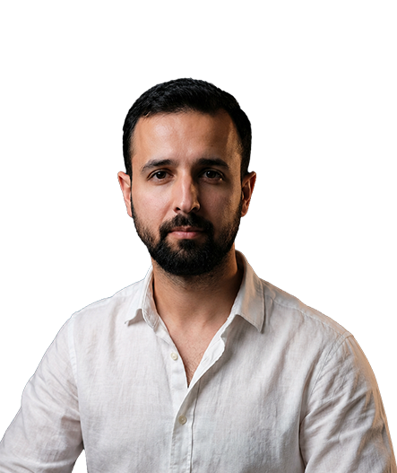

تدوینگر ویدیو و طراح موشن
ایدهها را
به حرکت درمیآورم
من مصطفی آرخیام؛ با تدوین، ریتم و حرکت،
ایدهها را به ویدیوهایی دیدنی تبدیل میکنم.
از اولین کات تا آخرین فریم.
Ae
00:00:02:16
مهارتهای من
›موشن گرافیکfx
›کامپوزیتfx
›جلوههای بصریfx
›تدوین ویدیوfx
0s01s02s03s04s05s06s07s
پروژهها
همه پروژهها
پشت این فریمها،
من مصطفیام.
تدوینگر ویدیو هستم و روی ویدیوهای تبلیغاتی، آموزشی و شبکههای اجتماعی کار میکنم. ریتم ویدیو، کاتها، رنگ و جزئیات تصویر برایم مهماند.
هر پروژه را با توجه به موضوع و مخاطب خودش پیش میبرم؛ با هدف رسیدن به نتیجهای تمیز، روان و قابلفهم.
از پروژهات بگواز ایده تا خروجی
چه کاری میتوانم برایت انجام دهم؟کامپوزیشن بعدی را با هم بسازیم
ایده از تو، حرکت از من.
برای صحبت درباره پروژهات، از اینجا پیام بده.